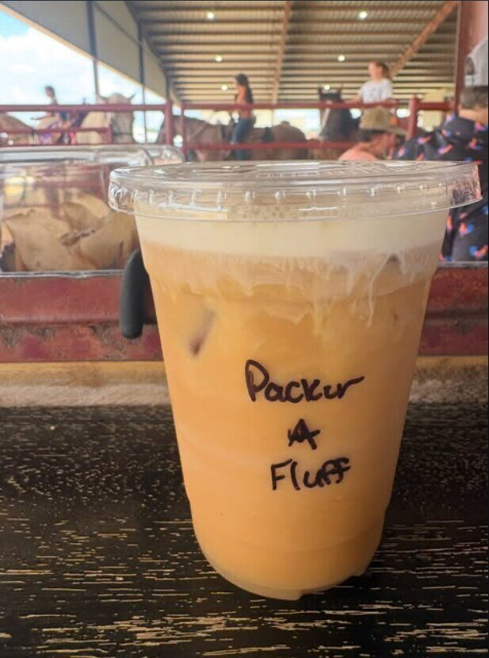
Espresso favorite
The Packer
Coconut latte · hot or iced
Fort Worth's mobile drink trailer
Named lattes, sparkling tea, dirty sodas and specialty drinks served from a one-of-a-kind trailer built for horse shows, weddings and North Texas celebrations.
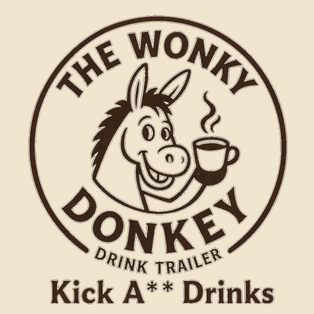
The drinks are the main event
Hot, iced, fizzy or built around your event. Our menu has real range without making the ordering line feel like homework.
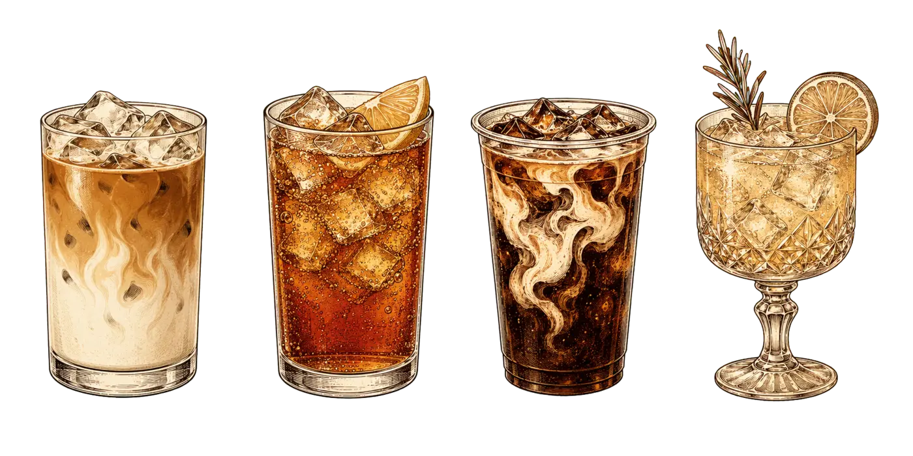

Coconut latte · hot or iced
Sparkling iced tea for long afternoons at the horse show.
Your favorite soda dressed up with cream and flavor.
One or two custom drinks created just for your crowd.
A little offbeat, entirely yours
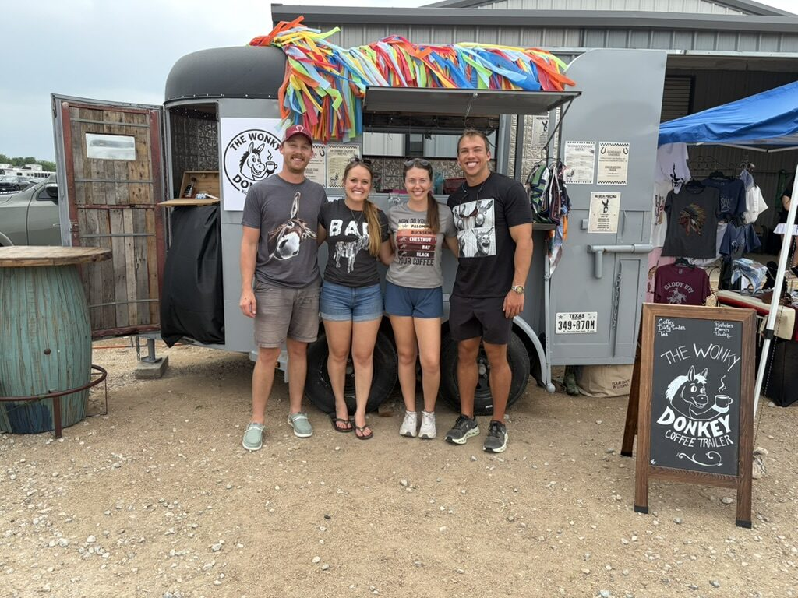
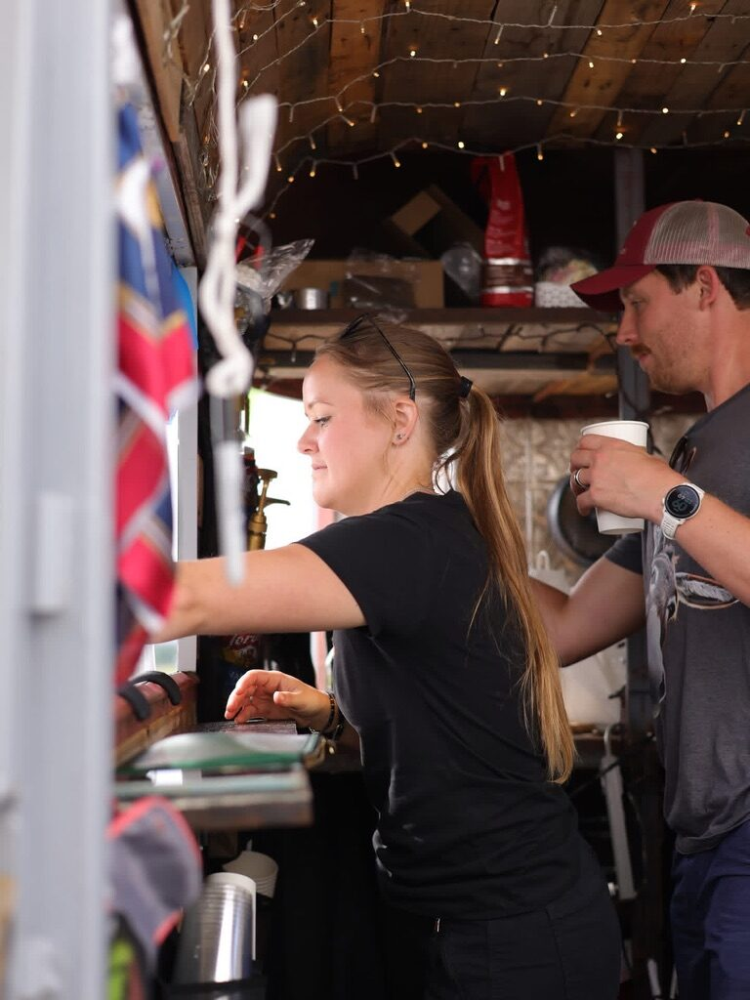
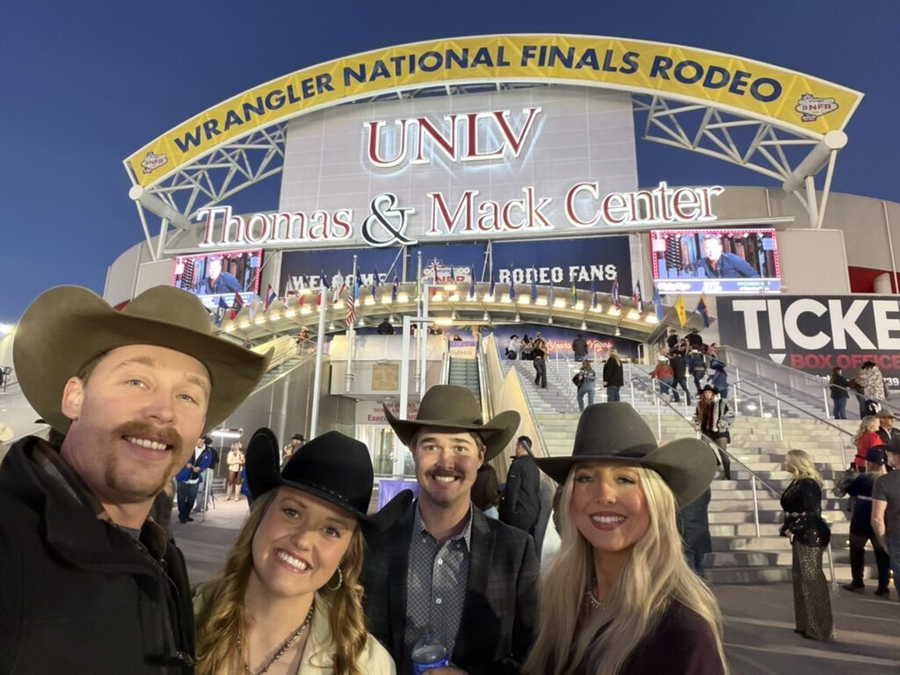
Our story
Mattie and Jackson met as neighbors, married in 2025 and started The Wonky Donkey later that year. Together with Mattie's brother, Clay, they blend deep Western roots, life on the road and a shared love of making people feel welcome.
Read our story →The drink lineup
Our drinks lead with the Wonky name and the familiar description follows—so ordering stays fun and easy.
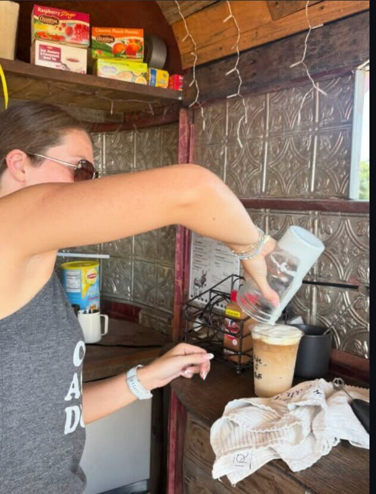
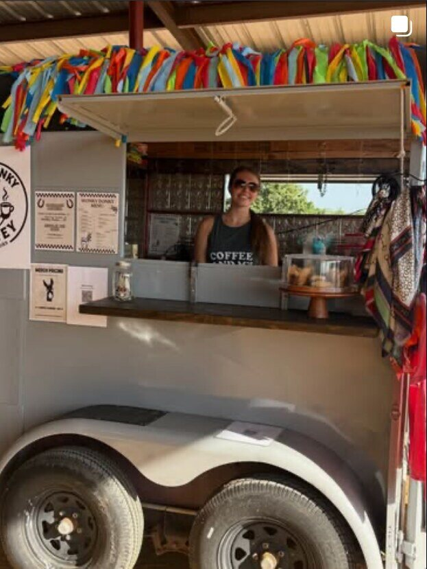
Build your own menu
The sweet spot is 4–6 drinks: choose 3–4 from our established lineup, then work with us to create 1–2 drinks for your crowd.
The Mule, Packer, Kicker, Long Ears, Burro, Zonkey, Colt Breaker or Jenny.
Choose hot or iced, whole or almond milk, and vanilla, coconut, raspberry or caramel flavor.
We'll help create 1–2 drinks around your couple, company, party or theme.
Help shape the next flavor
The people behind the trailer
Mattie and Jackson first met as neighbors, married in 2025 and started The Wonky Donkey later that year. Mattie works with horses every day and manages two Airbnbs, while Jackson is a SkyCam pilot, flying the camera above NFL, college football and FIFA World Cup games.
Jackson married into the Western world, but Mattie and her brother, Clay, were born into it. The three of them believe The Wonky Donkey is the right blend of memorable drinks and easygoing Western flair—making any event feel fun, simple and genuinely enjoyable.
Mattie's brother Clay completes the original Wonky Donkey crew. Born into the Western world alongside Mattie, he brings the same easy humor and pitch-in attitude that built the trailer in the first place. Between events, you may find him guiding fishing trips, bear hunts and elk hunts in rural Montana—but wherever the season takes him, Clay is part of this family business and its story.
When the occasion calls for something fresh from the oven, Peyton joins us as our pastry chef. Her event lineup can include blueberry, chocolate and cinnamon muffins, banana-chocolate cookies, coffee-cake muffins and other rotating bakes chosen to pair with the drinks and the crowd.
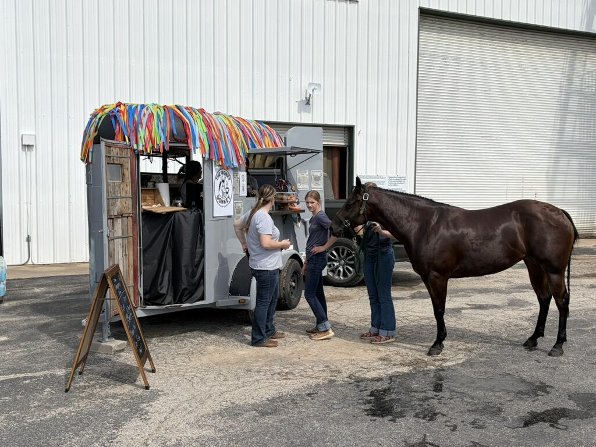
Wedding & private-event service
Flat-fee service means your guests enjoy the drinks without reaching for a wallet. Choose the moment and we'll tailor the menu to fit.
Bridal brunches, welcome parties or a late-night caffeine boost.
Cocktail hour into dinner with espresso and custom zero-proof drinks.
Full evening service with expanded choices and custom couple's drinks.
Final pricing depends on guest count, location, menu and service requirements. Indoor bar service is available when the trailer is not the right fit.
Get a Wedding QuoteHorse shows & everything beyond weddings
Horse shows are our bread and butter, but we're equally at home at birthdays, church gatherings, company parties and community events.
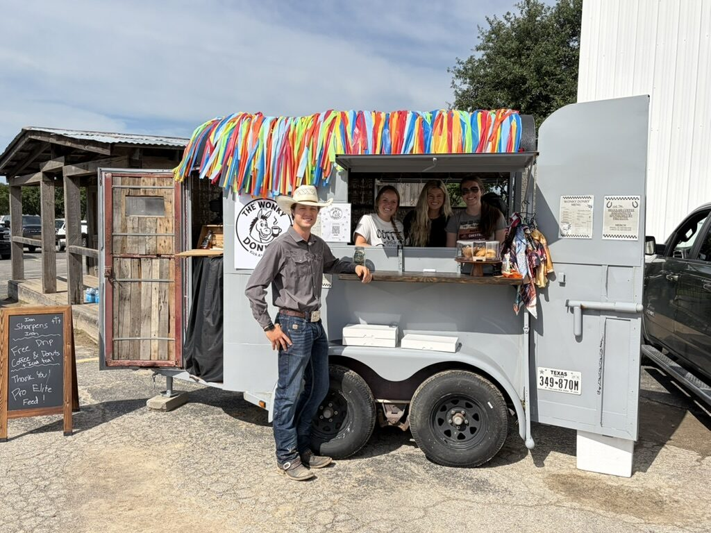
You cover the package and guests order freely. Clean, generous and easy.
You set a hosted tab; guests purchase after that amount is reached.
Guests buy their own drinks—great for horse shows, markets and public events.
Guest sales can satisfy the agreed minimum. If sales fall short, the host covers only the difference as a sit fee. Fully sponsored packages already include the minimum.
Mileage is quoted round-trip from Fort Worth at a clear rate before booking—no surprise travel charge later.
Merchandise concepts
Cream, brown and easy to wear. A growing collection with modern Western confidence and unmistakable Wonky Donkey personality.
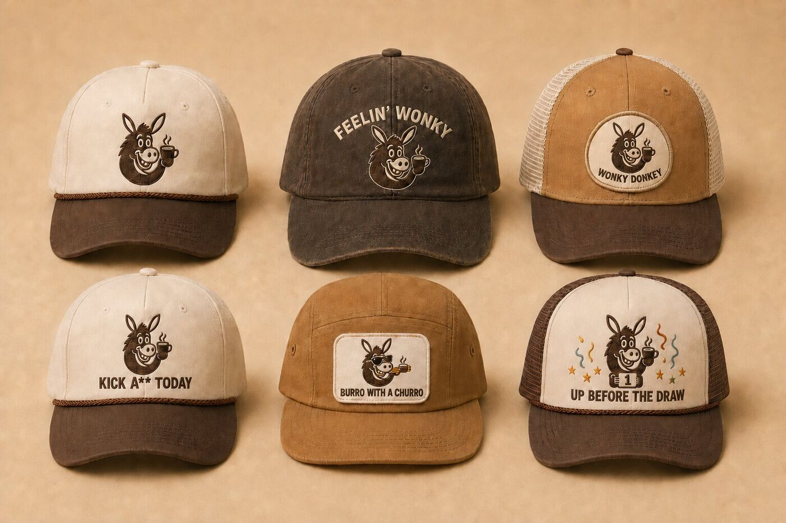
Rope caps, washed cotton and trucker patches with jokes subtle enough to wear anywhere.
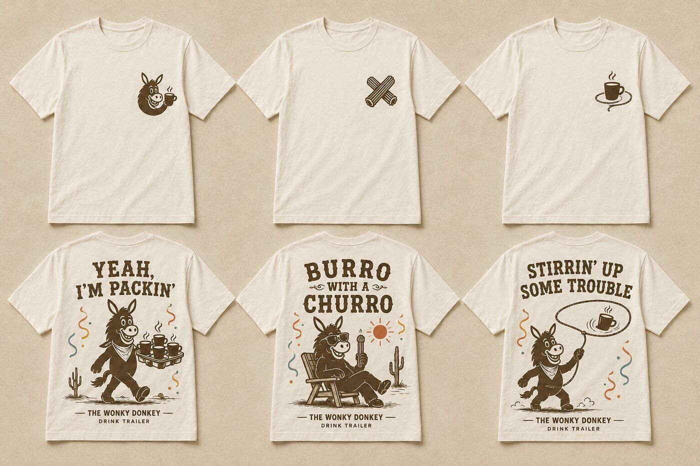
Quiet marks up front. Stirrin' Up Some Trouble on the back.
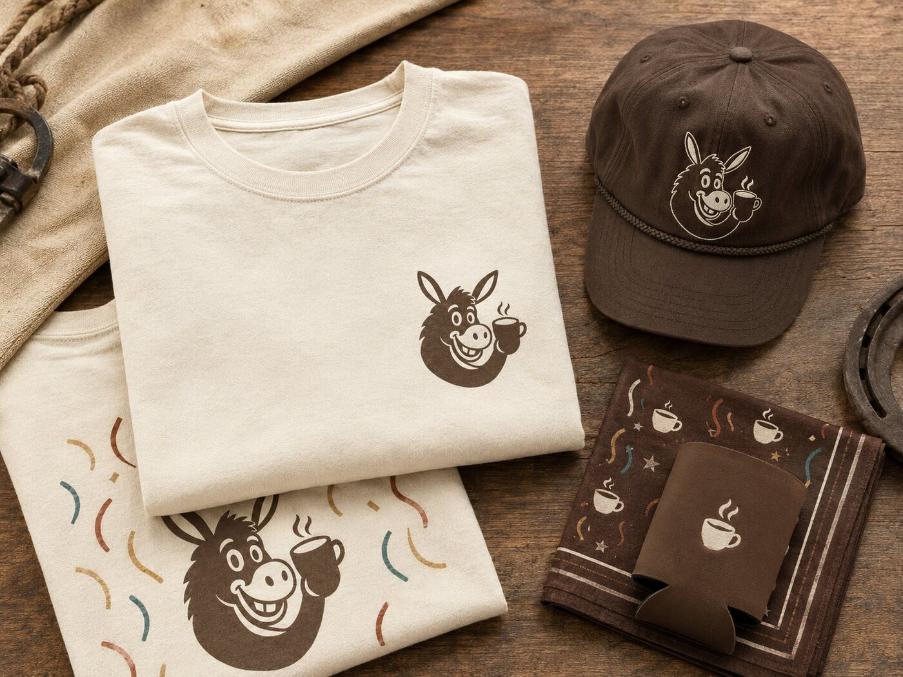
Hats, tees, bandanas and drink sleeves for the horse show or around town.
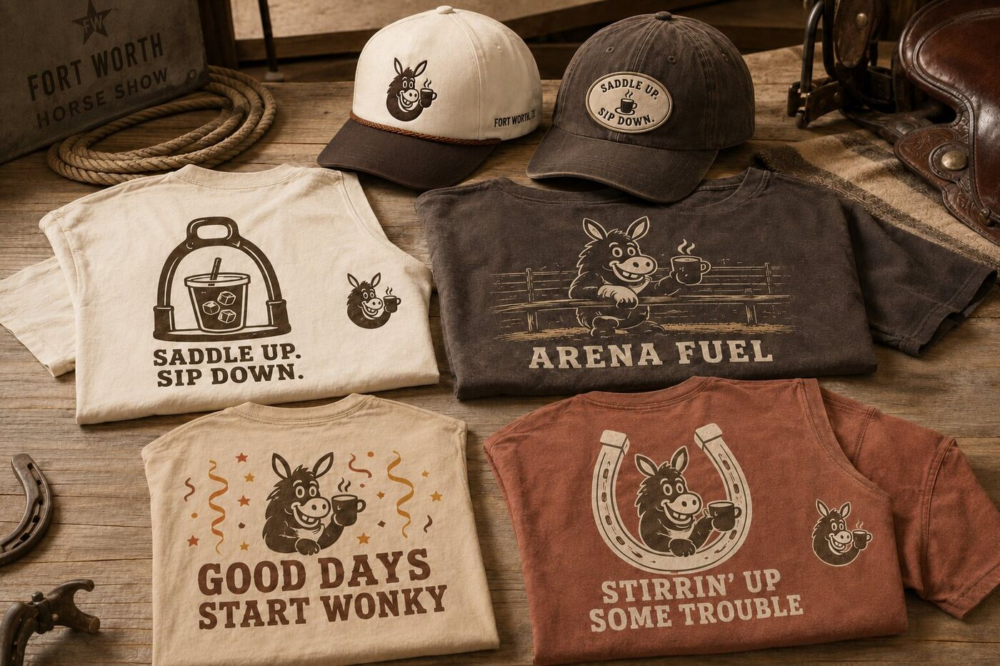
Saddle Up. Sip Down. Good Days Start Wonky. Built for long days around the arena.
These are design concepts, not products for sale yet. Favorites will become final print and embroidery-ready artwork.
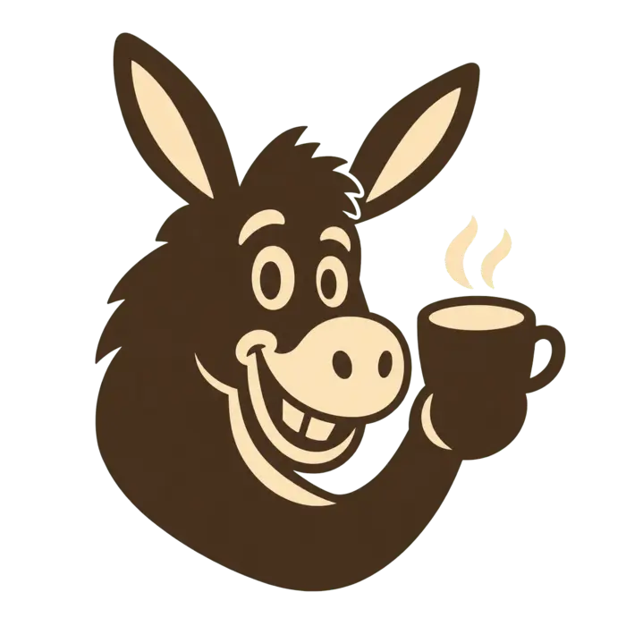
The quick-stop app
Pay, pick a drink, find our next stop or browse what we're wearing.
Send to @WonkyDonkeyCoffee. Put your name and drink in the note.
Open Venmo →Our next public event and current location are posted on Instagram.
Check today's location →04 · MerchBrowse hats, tees and the growing Western goods collection.
Browse the lookbook →Weddings, parties & private events
Tell us the details and we'll reply with availability and the best setup for your crowd.
Quick pricing request
Send the five basics and we'll recommend the right service style and an estimated price.